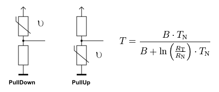
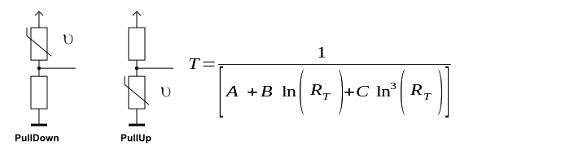
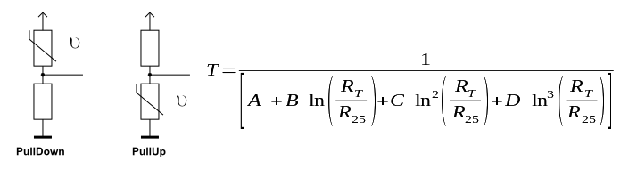

Automatisches Erzeugen einer NTC Tabelle
Erzeugt den C Code zur Umrechnung von ADC Werte eines Spannungsteilers mit NTC in °C
Berechnung
Berechnungsform
beta

Steinhart-hart3

Steinhart-hart4

Erzeugen der Tabelle mit beta-Wert
Anzahl der Stützpunkte
8
16
32
64
128
256
512
1024
2048
4096
Einheit
°C
ADC Auflösung
8 Bit
10 Bit
12 Bit
NTC Beschaltung
PullDown
PullUp
PullUp/Down-Widerstand
Ω
RN = Widerstand NTCs bei TN=25°C
Beta (B) Wert des NTCs
Messbereich
°C bis
°C
Der Fehler durch die Verwendung einer Tabelle beträgt
°C
// test test
// test
#include "main.h" int main(void){ int x = 1; if(x == 1) }